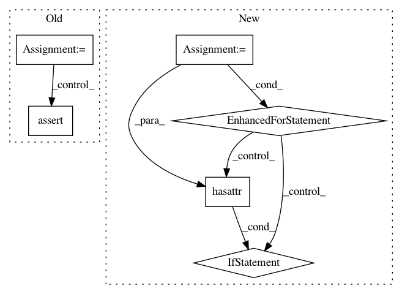

85f0448feec3843b587c8674a660462d8b25e1e2,keras/engine/topology.py,,merge,#Any#Any#Any#Any#Any#Any#,1376
Before Change
input_layers = []
node_indices = []
tensor_indices = []
for x in inputs:
assert hasattr(x, "_keras_history"), "Input tensor to "merge" was not a Keras tensor: " + str(x)
input_layer, node_index, tensor_index = x._keras_history
input_layers.append(input_layer)
node_indices.append(node_index)
tensor_indices.append(tensor_index)
merge_layer = Merge(input_layers, mode=mode, concat_axis=concat_axis,
dot_axes=dot_axes, output_shape=output_shape,
node_indices=node_indices, tensor_indices=tensor_indices,
name=name)
After Change
(in case some input layer node returns multiple tensors).
"""
all_keras_tensors = True
for x in inputs:
if not hasattr(x, "_keras_history"):
all_keras_tensors = False
break
if all_keras_tensors:
input_layers = []
node_indices = []
tensor_indices = []
In pattern: SUPERPATTERN
Frequency: 3
Non-data size: 6
Instances
Project Name: keras-team/keras
Commit Name: 85f0448feec3843b587c8674a660462d8b25e1e2
Time: 2016-04-19
Author: francois.chollet@gmail.com
File Name: keras/engine/topology.py
Class Name:
Method Name: merge
Project Name: keras-team/keras
Commit Name: 94dbc3042f5a85b399f5ce2859d4e8fbafd235b9
Time: 2017-07-06
Author: me@taehoonlee.com
File Name: tests/keras/backend/backend_test.py
Class Name:
Method Name: check_two_tensor_operation
Project Name: keras-team/keras
Commit Name: 94dbc3042f5a85b399f5ce2859d4e8fbafd235b9
Time: 2017-07-06
Author: me@taehoonlee.com
File Name: tests/keras/backend/backend_test.py
Class Name:
Method Name: check_single_tensor_operation